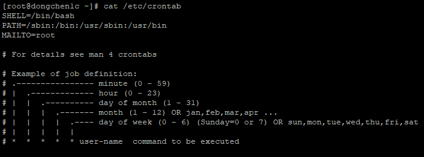

Specifies a value within the valid range value of a field.
*
All values within the valid range value of a field.
N,N,N
Multiple values within the valid range value of a field.
N-N
Range values within the valid range value of a field.
*/N
The number that can be divided by the maximum value of a field.
Examples
Check Whether Crond is Running
1
systemctl status crond
Install cronie If It Has Not Been Installed Yet
1
yum install cronie
Check Crontab Configuration
1
cat /etc/crontab

Here are some configuration fields in /etc/crontab file:
Field
Description
SHELL
Shell to be used by crontab.
PATH
The path to the command executed by crontab, and if the command is not in these directories, the full path needs to be specified.
MAILTO
The user who will receive the message after the crontab command has been executed.
Run Command Every Minute
1
2
3
# > /dev/null means don't send email to user, unless there is an error
crontab -e # This will open the job definition file in editable mode
*/1 * * * * /usr/bin/wall 'This message is broadcast every minute.' > /dev/null
If this is the first time a crontab is created, the following information will be output after the creation:
After few minutes:
List Scheduled Jobs
1
crontab -l
Delete Scheduled Jobs With Confirmation
1
2
3
crontab -l
crontab -ri # At this stage: Input y or yes and press enter
crontab -l